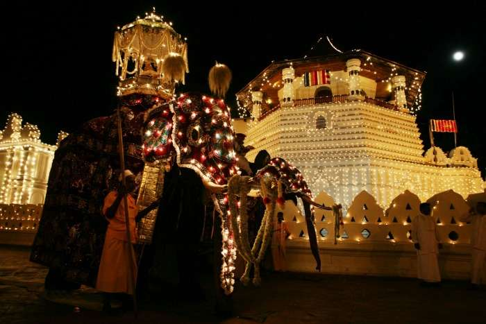

Dambulla is the largest and best-preserved cave temple complex in Sri Lanka. The rock towers 160 m over the surrounding plains. There are more than 80 documented caves in the surrounding area. Major attractions are spread over five caves, which contain statues and paintings. These paintings and statues are related to Gautama Buddha and his life. There are a total of 153 Buddha statues, three statues of Sri Lankan kings and four statues of gods and goddesses. The latter include Vishnu and the Ganesha. The murals cover an area of 2,100 square metres (23,000 sq ft). Depictions on the walls of the caves include the temptation by the demon Mara, and Buddha's first sermon.
Yala combines a strict nature reserve with a national park. Divided into 5 blocks, the park has a protected area of nearly 130,000 hectares of land consisting of light forests, scrubs, grasslands, tanks and lagoons. Two blocks are currently opened to the public. Situated in Sri Lanka’s south-east hugging the panoramic Indian Ocean, Yala was designated a wildlife sanctuary in 1900 and was designated a national park in 1938. Ironically, the park was initially used as a hunting ground for the elite under British rule. Yala is home to 44 varieties of mammal and 215 bird species. Among its more famous residents are the world’s biggest concentration of leopards, majestic elephants, sloth bears, sambars, jackals, spotted dear, peacocks, and crocodiles. The best time to visit Yala is between February and July when the water levels of the park are quite low, bringing animals into the open.
Arugam Bay is located in the barren zone on the southeastern coast of Sri Lanka on the Indian Ocean. The Gulf is located 320 km east of Colombo. Arugam Bay is known as one of the best-surfing destinations in the world. As a neighbor of the world-famous Yala National Park, If you are looking for the top of the turquoise waters, Arugam should definitely be included in your list in terms of Sri Lanka tourist places.
Sigiriya or the mount of remembrance is a World Heritage Site and one of the most stunning places to see in Sri Lanka. This giant formation of rock rises out of nowhere towering over everything in its vicinity. It is quite a climb to the top but once up there you will get to see a panoramic view of the nearby sights and the Sigiriya fort. The rock fortress is a slice of history perched on a rock and is really worth a visit. Not much is heard and said about Polonnaruwa, but this ancient city is no less than the Petra of the south. A gem among Sri Lanka tourist attractions, this ancient ruined city stands amidst its erstwhile sturdy columns and architecture. The best way to explore this ancient city is to hire a bike and zoom around the ruins. The site is well maintained and is a telling example of Sri Lankas history and culture. Polonnaruwa can be easily accessed via Sigiriya. You can take a tuk-tuk or a bus from Sigiriya. Or you can take a bus from Dambulla to Polonnaruwa. Best Hotels to Stay: Jetwing Vil Uyana, Camelia Resort and Spa, Hotel Sigiriya, Camellia Resort and Spa, and Lal Homestay
Galle is an important city in Sri Lanka and is a one-stop destination wherein you can take in all sights and sounds. One of the best places to visit in Sri Lanka is the Galle Fort. The Galle Fort area has wide cobblestoned roads and a number of eateries and cafes. Try and catch the sunset while you are there. There are a number of trinket shops and galleries that you can visit. It is among the most visited places in Sri Lanka. Another picturesque destination for sightseeing in Sri Lanka is the Japanese Peace Pagoda. Quite close to the Unawatuna beach, it is a white dome of serenity. Best Hotels to Sty: Jetwing Lighthouse, Amangalla, Tamarind Hill, Apa Villa Thalpe, and The Fortress

Jaffna is one of the most beautiful towns located right on the northern tip of Sri Lanka. Jaffna is known for its predominant Tamil population and recognized as the cultural capital for Tamilians in Sri Lanka. The hospitality of the locals will surely impress any tourist to this place.
Among the important places to visit in Jaffna, this is definitely one. If you want to get the essence of the history of Jaffna then the existence of this Royal Palace can never be ignored. In the Nellore District, you can still get the view of the antique bathing pool and the remnant of the royal palace. You can definitely include this place among the top places to visit in Jaffna. This place holds the memory of the last Tamil King who ruled the Yarlpana Kingdom successfully. After visiting the Nallur Temple you can reach this place directly. From Jaffna town, you will get lots of private as well as public transport to reach this place.
Pilgrims from all parts of the world visit Nallur Temple. The prime feature of this Nallur Temple is the golden arch and the extended Gopuram. People visit here mainly to explore this Gopuram. The premise of this temple was built during the eighteenth century. It was in the year 1620 when the Portuguese destroyed the old construction of this building which was constructed during the regime of Tamil Kings. This temple is now considered as the primary place to hold any type of religious festival.
This tourist place is famous for boat services. You can surely enjoy the boat ride and visit the island. This island is located at a distance of 2 to 3 hours from the city Jaffna. The amount of time you need to visit depends on the availability of boats to reach there. The main temple here was built by a wealthy foreign trader after receiving the blessings from the Goddess Amba Devi. Unfortunately, this temple was destroyed by the Portuguese but it was rebuilt during the 18th century. It was the year 1933 when the actual Gopuram was added to it.
Jaffna Fort is considered as one of the major ones. This fort was established in the year 1618 by the people of Portuguese Origin during the Portuguese invasion in Jaffna. This fort is positioned near the city of Karaiyur. This fort is also famous as Fortress of Our Lady of Miracles of Jaffna. During the year 1658, this fort was conquered by the Dutch invaders and it was again in the year 1795 when this fort was again taken back by the British. From the period 1986 to 1995 this fort was captured by LTTE and it was recaptured by the Sri Lanka Army in the year 1995.
This is an ancient Buddhist place in Jaffna which is known for its historical events. This temple is near to Chunnakam and from the Jaffna Town, the distance is only 8 km. The total area of the land is a - acre and the entire structure is painted with ash-colored stone. There are 61 dagobas and some of them have only the foundation. This temple was founded during the Anuradhapura Era and stone scriptures are still there which proves the rich ancient history of this temple.
Travelers from all parts of the world mainly arrive here to enjoy a bath in the natural water spring. It is said that all illness and sickness will get cured after having a bath here. Lots of Hindu Pilgrims visit this temple to take blessings. This place is located at 15 kms away from town and a perfect place to take a warm bath and rejuvenate your soul. The people having a religious belief will find peace at this place.
Yes, a weird one in the list of best places to visit in Sri Lanka, the war cemetery is well maintained and the grounds are well kept. Overall it is a very humbling experience. This cemetery is hard to find without a guide, but once you get there, it is worth the effort. Location: Kandy, Sri Lanka Timings: 7 am to 4 pm
The temple of the tooth is again a popular one among tourist places in Sri Lanka. This temple in Kandy is iconic because of the history attached to it. With a quaint setup and interesting artifacts, this temple is worth a visit. Location: Sri Dalada Veediya, Kandy 20000, Sri Lanka Timings: 5.30 am to 8 pm
Trincomalee, among many similar Sri Lanka tourist spots, is blessed with a beautiful beach. If you are up for an underwater diving tour, then SLDT (Sri Lanka Diving Tours) will give you the best experience. Besides water sports, there are also many temples and beaches in Trincomalee. There's also a war cemetery which is surrounded by lush gardens, which makes it one of the best places to see in Sri Lanka.
This city was once the ancient kingdom of Sri Lanka and walking into this still gives a feeling of the Golden Age. Inside one of the most popular Sri Lanka tourist spots, there are still ruins of palaces, shrines and stupas which makes it one of the top tourist attractions in Sri Lanka. All these landmarks give closure to the historical remains which hold a glorious past. This place has a lot to explore and gives a peek to the golden past of this side of Sri Lanka. It is among the best Sri Lanka tourist places. Main Highlights: One shouldn’t miss witnessing the statue of Parakramabahu I who ruled during the golden age. Alongside that one can also see the magnificent view of the Lotus Pond which is made in lotus-shaped petals and built on 4-tiers.
Anuradhapura was the cradle of glorious Sinhalese Buddhist civilization. The pride of place in Anuradhapura was taken by the ancient stupas and ancient reservoirs. Towering stupas (dagobas) of stupendous domes, the marvels of ancient civil engineering, were built having taken into the account the effects of lightening on high rise constructions, among numerous other engineering factors. The vast rainwater reservoirs built by crossing rivers with enormous dams and controlling the outlets with "Bisokotuwa" (Sinhala: Queens enclosure-no entry, of course) valve pits (sluice gate), extend lifeline to Anuradhapura district to date. Among the other tourist attractions at Anuradhapura are magnificent rock carvings of monumental richness and remarkable grace; colossal stone pillars that stand proud amidst the ruins of royal palaces, Buddhist monasteries and temples; magnificent stone cut swimming pools of sophisticated hydrology. The splendors of ancient Anuradhapura was narrated in great length by Fa-Hien, the famous Chinese Buddhist scholar pilgrim, who spent two years in Anuradhapura copying the Vinaya Pitakaya (Sinhala: Book of Discipline) of Theravada Buddhism at the end of the 4th century. The Roman historian Gaius Plinius Secundus (23 AD - August 25, 79 AD) has recorded the descriptions of the city of Anuradhapura made by Annius Plocamus, who had visited Anuradhapura during the reign of Sinhalese King Sadamuhunu (Chanda-Mukha-Siva) (44 AD- 52 AD). Sir William Colebrooke narrates of Anuradhapura "I saw here here ornamented capitals and balustrades, and bas reliefs of animals and foliage. I cannot better express my opinion of their elegance than by saying that, had I seen them in a museum, I should, without hesitation, have pronounced them to be Grecian or of Grecian descent. One semicircular slab, at the foot of a staircase, is carved in a pattern of foliage which I have repeatedly seen in works of Greek and Roman origin.
.jpg)
Nine Arch Bridge is also called the Bridge in the sky and is among the iconic Sri Lanka tourism places. It is in the small mountain town of Ella and offers visitors with splendid view of the surrounding area which comprises of lush greenery and tea fields. What makes the bridge unique is that it is made up of stone, brick and cement. There is no use of any steel. It is one of the best places to visit in Sri Lanka for a memorable holiday. Best Time To Visit: Sunrise
Mihintale is among the top Sri Lanka tourist attractions. It is a birth place of Buddhism attracting hundreds of pilgrims to this site every year. It is a mountain located near the town of Anuradhapura where you can visit many religious and historical structures.

Udawalawe National Park is a must-visit place for wildlife lovers. It is one of those few places where elephant sightings are quite frequent. Not only elephant, you get a chance to get a glimpse of many animals including peacocks, water buffalo, crocodiles, jackals, monkeys and deer. For the best experience of this top attractions in Sri Lanka, take a safari early morning when the animals are most active. Location: Udawalawa, Sri Lanka Timings: 6.00 AM to 6.00 PM
Adam’s Peak is another famous tourist attractions in Sri Lanka. The topmost point of the peak has a footprint cast in stone which has spiritual significance to different religions. Many pilgrimage trek to the top on full moon nights. Most of them also start hiking around 3 AM to reach the summit by sunrise for a splendid view. It is also one of the most popular honeymoon places in Sri Lanka. Location: Sabaragamuwa, Sri Lanka
Mount Lavinia is one of the most romantic tourist places in Sri Lanka. It is popular among the tourists for its vibrant nightlife and Golden Mile Beach. On your visit to this place, make sure to stay at the deluxe Mount Lavinia Hotel for an amazing experience. Located centrally, enjoy the gorgeous view of Colombo’s skyline and have the best seafood at Mount Lavinia beach and a lot more. This is one of the Sri Lanka tourism places you must not miss. It is also surrounded by some of the best beaches in Sri Lanka. Timings: 7 am to 7 pm.
Find your way with us in google.